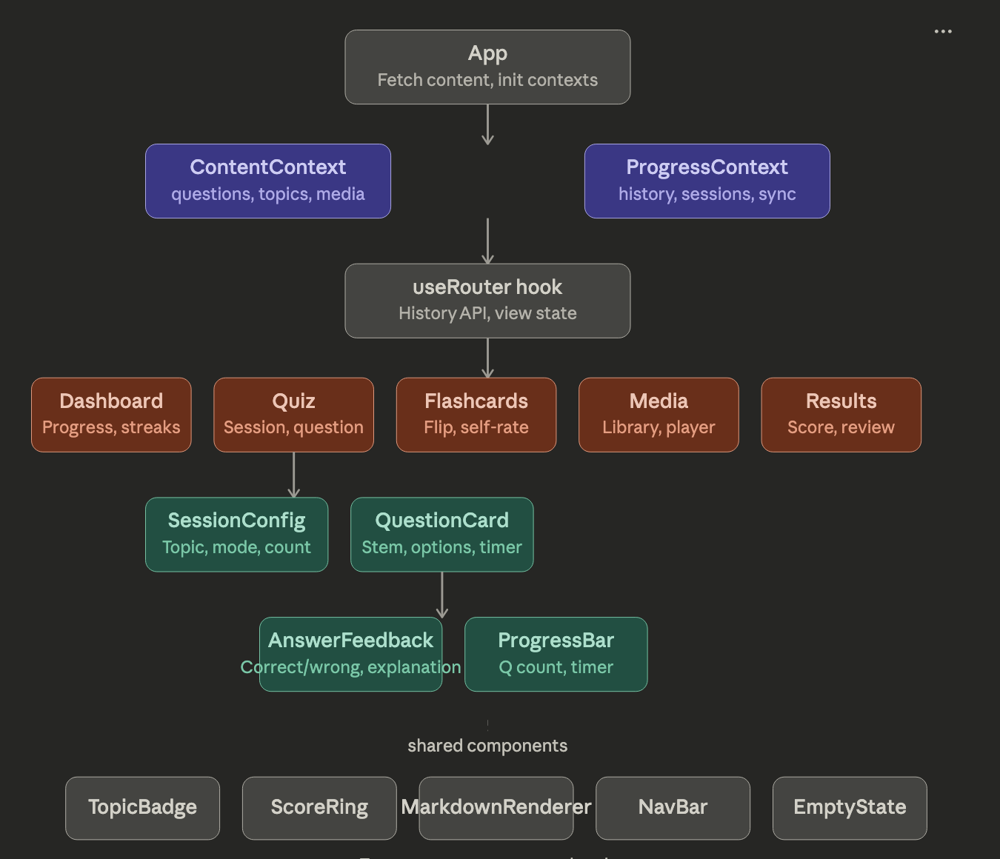

WSET-3 Interactive Study Guide
This will be a multi-modal, mobile friendly web app to allow students to to threoughly prepare for the WSET-LEVEL-3 certification test.
While this project will focus on these materials, the goal is to build an engine that can be fed JSON testing data for any subject so it becomes more of a studying platform.
Work Log
Week 1 - March 30 - April 6
This week I focus on establishing core functionality for the app. I will be building a simple quiz engine that can take in JSON data and generate interactive quizzes. The goal is to have a basic version of the quiz engine up and running by the end of the week, allowing me to test it with some sample questions from the WSET-3 curriculum. I will also be working on the overall design and user interface to ensure it's mobile-friendly and easy to navigate.
